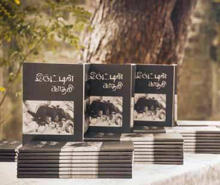

"Women Must Cast Aside the Hesitations That Impede the Revelation of Their Talents"
"Women Must Cast Aside the Hesitations That Impede the Revelation of Their Talents"
Jaffna Monitor hellojaffnamonitor@gmail.com 51 G ayathri is an emerging poet making her mark in the literary world with the recent release of her debut poetry collection, ",Ul;bd; fhjyp" (The Lover of Darkness). She holds a Bachelor's, Master's, and M.Phil in Bharatanatyam from various universities in Tamil Nadu, India. Currently, she serves as a Development Officer at the Jaffna Zonal Education Office and has contributed to "Thaiveedu" magazine. Gayathri's distinguished career in dance has now evolved to include poetry, further showcasing her multifaceted talent and expanding her creative horizons. Additionally, it is noteworthy that Gayathri is the only daughter of the esteemed and revered artist Asai Rasiah, considered one of the world-renowned painters and a symbol of Jaffna. What were the inspirations behind writing your first poetic collection, ',Ul;bd; fhjyp " (The Lover of Darkness), and what are you hoping to achieve with its release? I find joy in savoring the essence of life to its fullest. Living intertwined with the arts enriches my existence and fills my soul with happiness. The arts play a vital Jaffna - Gayathri Asai Rasiah "Women Must Cast Aside the Hesitations That Impede the Revelation of Their Talents" By: Our Reporter
Jaffna Monitor hellojaffnamonitor@gmail.com 52 role in preserving my identity throughout my journey. In this context, my maiden creation, "Iruttin Kaadhali" (The Lover of Darkness), has not only mirrored my life but also echoed the lives of my fellow companions. This poetry collection embodies the outpourings of a woman who, after basking in her father's love and care until age 38, endeavors to immortalize her experiences and lamentations following his loss. I aspired for the release of this poetry collection to transcend a mere book launch. Hence, I unveiled some of the poems through visual displays and performance art. I chose a traditional house and meticulously crafted various visual setups for this. I desired visitors to immediately sense the essence of the book's title as they entered the abode. After moving through the displays, the book release was graciously conducted in the open, under the tranquil shade of a neem tree in the backyard. I now feel a profound contentment with the elegance and grace of the "Iruttin Kaadhali" launch. Additionally, the accolades and appreciation from many continue to pour in. Are there any personal experiences or specific events that influenced the poems in this collection? Joy and sorrow are universal to all human beings. Happiness, melancholy, despair, solitude, separation, and loss are emotions that have indelibly marked us all. We have traversed many a bitter experience and still relish many a sweet memory. In this light, the myriad blissful yet some bitter encounters I have faced in my life are the wellspring of my writings. I hold dialogues with my poems. Thus, today, I speak to the world through the medium of poetry. Like a steadfast companion, my poems journey with me, offering solace and clarity. In the current landscape of Jaffna, we see a rare emergence of women writers. What do you think are the reasons behind this? What steps do we need to take to encourage and support more women to pursue writing as a society? The right to sculpt our lives and the liberty to live them reside within us. The fervor to write and the zeal to cultivate it must first blossom within. Women must cast aside the hesitations that impede the revelation of their talents. Frequently, women fear scrutiny should they dare to pen their thoughts. Indeed, questions will arise. I first etched my poems on Facebook's canvas. Many who perused them would call, inquiring, "Is there some turmoil in the family?" All they sought was an update, nothing more. We must learn to traverse such inquiries with a smile. Our journey towards our aspirations should proceed with quiet determination. Women possess the swiftness and managerial prowess to juggle multiple tasks with finesse. The obstacles to nurturing these abilities must be viewed as challenges to be met with courage. How has growing up in Jaffna influenced your writing? Though my father, Asai Rasiah, was a celebrated painter, to me, he embodied the

Jaffna Monitor hellojaffnamonitor@gmail.com 53 essence of a polymath. The poem he composed after beholding me for the first time in the hospital and those he penned after perusing my childhood photographs evoke a singular bliss when read. One of his friends, the esteemed poet and medical doctor, 'Kaapiyakko' Jinnah Sherifdeen, once visited our home with his nephew, E. Samad, a traditional poet. E. Samad, in appreciation of our hospitality, composed traditional poetry. My father, in turn, crafted a poetic response. In his book "Vimbam," he meticulously inscribed fitting poems beneath his paintings, all adhering to classical forms. Thus, my passion for poetry was kindled by my father. How does your current interest in reading compare to when you were a kid or schoolgirl? Do you think the prevalence of high-tech gadgets and smartphones has affected the literary culture in Jaffna? In my home, there exists a cherished personal library. It holds not only my father's professional tomes but also the works of literary giants like Sandilyan, Kalki, and Sujatha. During my school days, my father would gift me Rani Comics, Gokulam, and Panchatantra tales. I would eagerly devour the adventures of Mayavi in Rani Comics, my eyes wide with wonder. In contrast to the present era of sophisticated communication devices, I find that the times spent reading by the glow of an oil lamp and gathering to share stories under the moonlight were the true harbingers of joy and imagination, fostering a sense of well-being that modern times often lack. Your father, Asai Rasaiya, is considered one of the best painters Jaffna has ever produced. How did his upbringing and teachings influence you, and what inspired you to pursue a passion for writing instead of painting? How did his philosophy and artistic influence shape your approach to writing? My father never imposed his artistic profession or any other field upon me. However, due to being born into an artistic family, expressions related to these fields have been present within me since childhood. At the age of three, I was enrolled in Bharatanatyam classes. As I grew older, he would take me to evening classes for vocal music and violin under the tutelage of respective teachers. For my advanced studies, I chose Bharatanatyam as a subject. Subsequently, I went to India to pursue my degree in Bharatanatyam. It was only after my father's passing that I began to focus my attention on poetry. Thus, I did not have the opportunity to receive his guidance or influence in this realm. Self-portrait of Asai Rasaiya